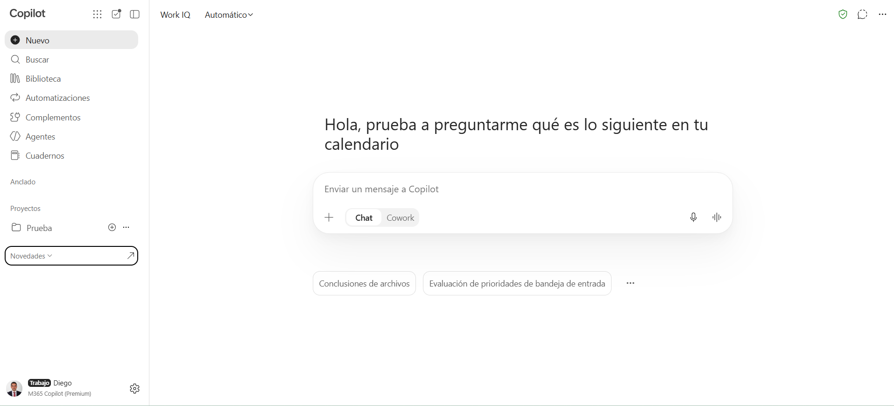

Las zonas se iluminan al pasar el ratón. Se explica la pantalla principal tal y como aparece en la captura; algunas opciones pueden variar según la versión y las licencias de cada usuario.

Pantalla principal de Copilot
Copilot sigue el mismo esquema que el resto de asistentes de IA: menú a la izquierda con tus conversaciones y herramientas, y a la derecha el chat donde escribes. Pulsa cualquier zona de la captura para ver su explicación.
Personalización: dile cómo quieres que responda
Copilot permite guardar unas instrucciones personalizadas para que todas sus respuestas sigan tu estilo sin repetirlo en cada chat.
- Abre la configuración (icono del engranaje, abajo a la izquierda, junto a tu nombre).
- Entra en el apartado de Personalización (el nombre exacto puede variar según la versión).
- Busca las instrucciones personalizadas y pega el texto que quieras que Copilot tenga siempre presente.
- Guarda y haz una prueba con una pregunta nueva.
Pendiente de confirmar: la ruta exacta de menús en nuestra versión de Copilot.
Ejemplo de instrucciones que puedes copiar:
Sé prudente en tus afirmaciones, valoraciones y declaraciones; no prometas más de lo que puedes cumplir ni generes expectativas poco realistas.
En cada respuesta, incluye: tu nivel de confianza expresado en porcentaje (%), cualquier punto que no te quede claro y cualquier aspecto sobre el que tengas dudas y que pudiera hacer que cambiaras de opinión.